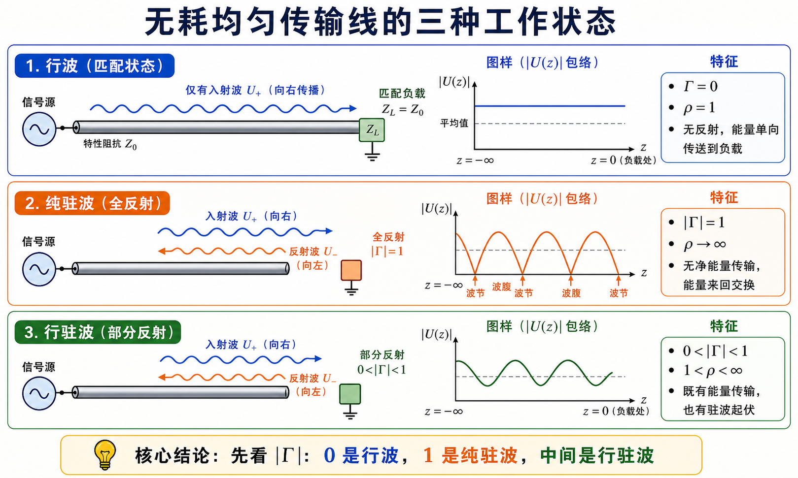

Lec04 · 行波、纯驻波与行驻波§
本节先抓住一句话§
传输线上的工作状态，主要看反射有多强：
- 没有反射，是行波。
- 全反射，是纯驻波。
- 反射一部分，是行驻波。
用公式说，就是看 $|\Gamma|$。
三种状态一张表§
| 状态 | 反射系数 | 驻波比 | 物理图像 |
|---|---|---|---|
| 行波 | $\Gamma=0$ | $\rho=1$ | 只有入射波，能量向负载传输 |
| 纯驻波 | $|\Gamma|=1$ | $\rho\to\infty$ | 全反射，平均功率不被负载吸收 |
| 行驻波 | $0<|\Gamma|<1$ | $1<\rho<\infty$ | 一部分吸收，一部分反射 |
这张表比背很多文字更有用。考试问“三种工作状态”时，先写判据，再解释波形和能量。
行波状态§
行波状态的典型条件是负载匹配：
$$ Z_L=Z_c,\qquad \Gamma_L=0. $$
此时没有反射波，
$$ U(z)=U^+(z),\qquad I(z)=I^+(z). $$
沿线电压、电流幅度不因反射而起伏。若线无耗，功率沿线传输到负载。
白话说：负载“长得像”这条线的延续，波走到终端没有看到突变，所以不弹回来。
纯驻波状态§
纯驻波的典型条件是全反射：
$$ |\Gamma_L|=1. $$
最常见的两个边界：
| 终端 | 反射系数 | 直觉 |
|---|---|---|
| 短路 $Z_L=0$ | $\Gamma_L=-1$ | 电压在终端为零 |
| 开路 $Z_L\to\infty$ | $\Gamma_L=+1$ | 电流在终端为零 |
纯驻波中，入射波和反射波幅度相等。线上会出现稳定的波腹和波节。理想无耗情况下，负载不吸收平均功率。
行驻波状态§
多数实际负载都在中间：
$$ 0<|\Gamma_L|<1. $$
此时一部分功率进入负载，一部分功率被反射回来。线上既有向前传播的能量，又有由干涉形成的幅度起伏，所以叫行驻波。
行驻波不是“另一种神秘波”，它就是入射波 + 较小的反射波。
电压包络怎么看§
电压相量可以写成入射和反射之和。取幅值时，会得到沿线起伏的包络：
$$ |U|_{\max}=|U^+|(1+|\Gamma|), $$
$$ |U|_{\min}=|U^+|(1-|\Gamma|). $$
所以
$$ \rho=\frac{|U|_{\max}}{|U|_{\min}} =\frac{1+|\Gamma|}{1-|\Gamma|}. $$
这也解释了为什么 $\rho$ 越大，说明反射越强。

图里最平的那条对应行波；起伏有限的是行驻波；能跌到零的是纯驻波。
如何由测量反推负载§
如果题目给了驻波比 $\rho$ 和第一个波节位置，就可以反推出负载信息。
思路是：
- 由 $\rho$ 算出 $|\Gamma_L|$：
$$ |\Gamma_L|=\frac{\rho-1}{\rho+1}. $$
- 由波节位置判断 $\Gamma(z)$ 的相位。
- 用 $\Gamma(z)=\Gamma_L e^{-j2\beta z}$ 把相位换回负载处。
- 用
$$ Z_L=Z_c\frac{1+\Gamma_L}{1-\Gamma_L} $$
得到负载阻抗。
这个题型最容易错在第 2 步：波节位置给的是相位信息，不只是距离数字。
作业怎么答§
Lec04 的叙述题建议这样组织：
- 先列三种状态的 $\Gamma$ 和 $\rho$ 判据。
- 再说电压电流幅值分布：行波平坦，纯驻波有零点，行驻波介于中间。
- 最后联系功率：匹配吸收最好，全反射不吸收平均功率，中间情况部分吸收。
对应题解见 第一次作业 · Lec04。
Mini 自检§
- $|\Gamma|=0.5$ 是哪种工作状态？
- 纯驻波时 $\rho$ 为什么趋于无穷大？
- 只给 $\rho=2$，为什么还不能唯一确定负载阻抗？
- 短路终端和开路终端的反射系数分别是多少？